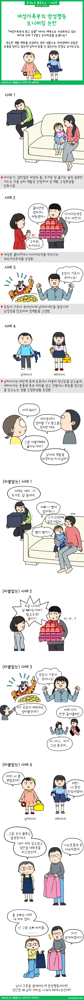

여성가족부의 양성평등 모니터링 논란

인터넷에 “여성가족부의 광고 검열”이라는 제목으로 성차별 사례를 조사한 리포트가 공유되고 있더군요. 도저히 정말인지 이해하기 힘든 조사자료였답니다. 그런데 찾아보니 정말 여성가족부의 산하기관인 ‘한국양성평등교육진흥원’이라는 곳에서 서울 YMCA와 공동 조사를 한 자료라고 하네요.
해당 자료 보러가기 > 첨부파일에 붙임. 2018년 대중매체 양성평등 모니터링 보고서(TV광고).pdf 를 보시면 됩니다.
내용들을 보면 이해가 가는 부분도 있지만 이해하기 힘든 부분도 있답니다. 만일 단순 조사라면 공개하면 안되는 부분인데 공개를 해서 더욱 문제가 되었을 수도 있고, 최근 공개된 방송물 제작시 참고 가이드를 만들어 등장하는 여자들이 너무 다들 똑같아서 문제라는 지적이 이슈가 되기도 해서 난리가 났는데 아마도 이 것에 대한 결과물이었던 것 같아요.
더군다나 조사된 자료들은 방송통신심의위원회 등에 심의개선 요청을 한다고 하네요.